Our Sneaky Little Moments

Holding Hands
Our first time holding hands was so precious to me. It's the reason we're together today. Our first and everything. I still remember that moment clearly, your reactions when we held hands. You were so confused. You tried to hide your feelings that night, not knowing how you'd respond. Honestly, I never would have imagined we'd be here, together. I love youuuu ❤️
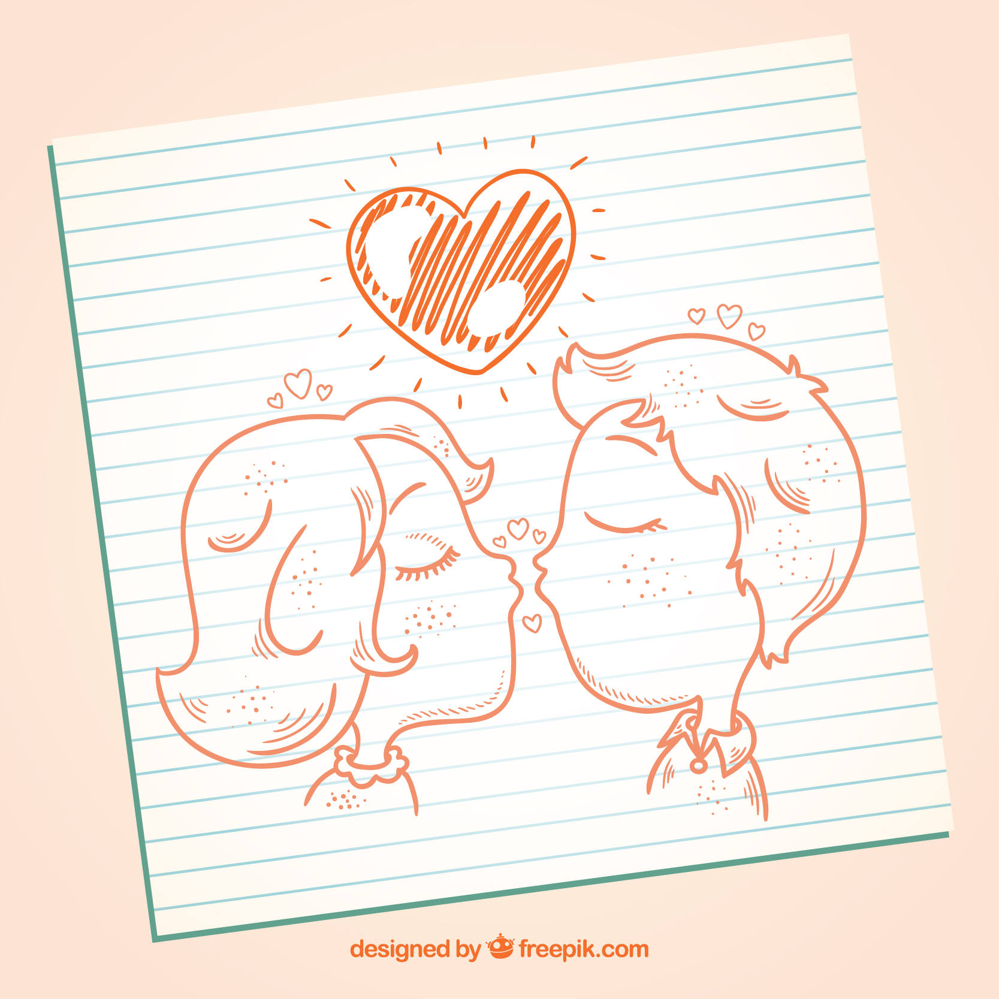
Kiss
What about the first time we kissed? Still remember? Those sneaky moments we did were so memorable to me that I would never forget. I love you so much baby ❤️
 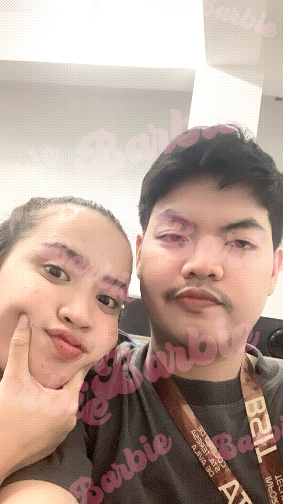
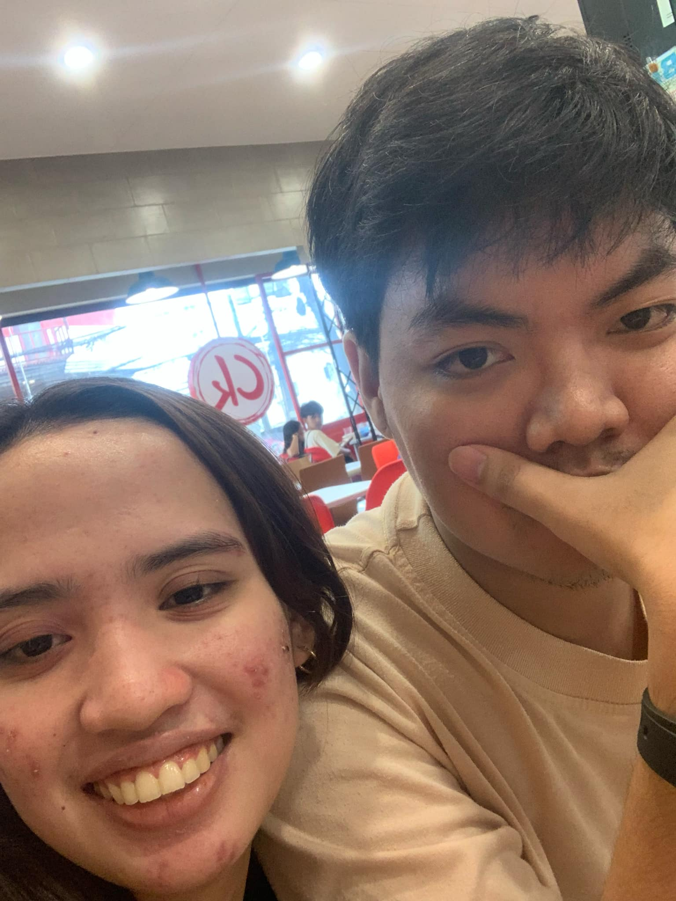
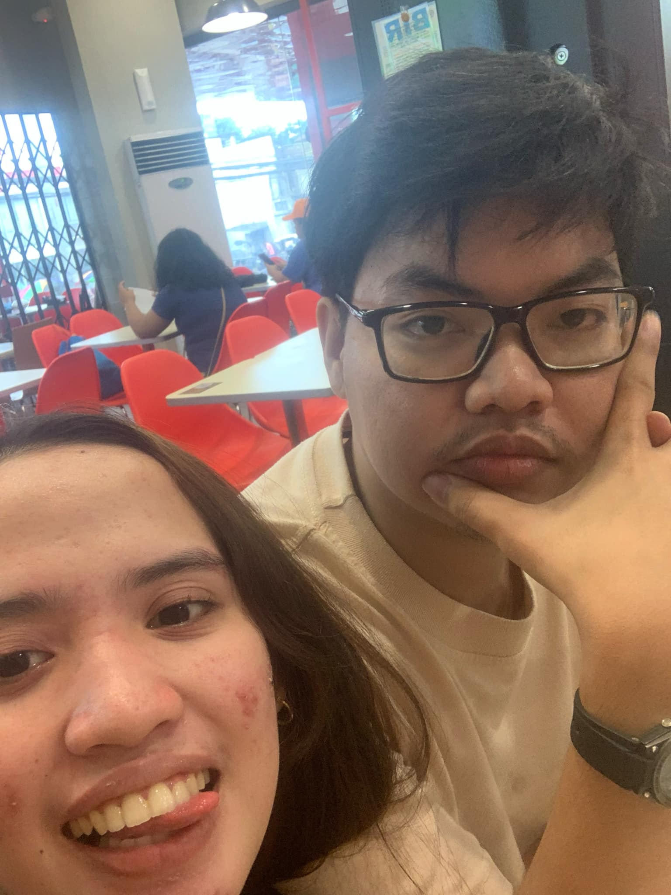
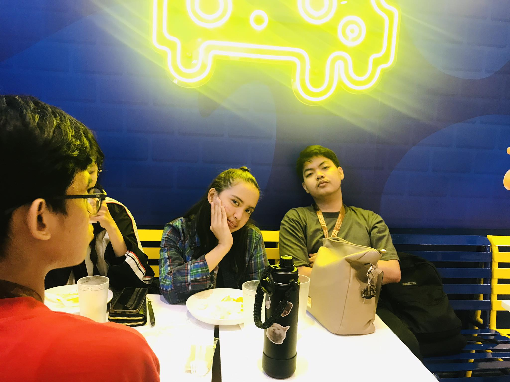
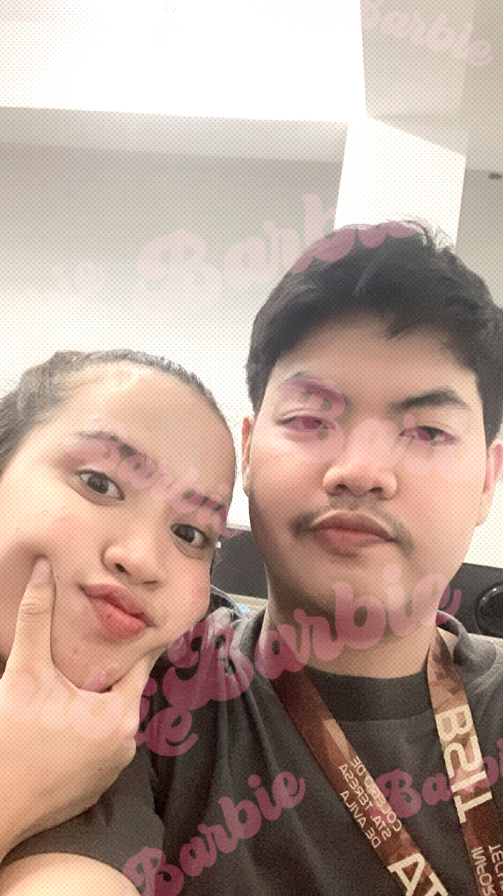
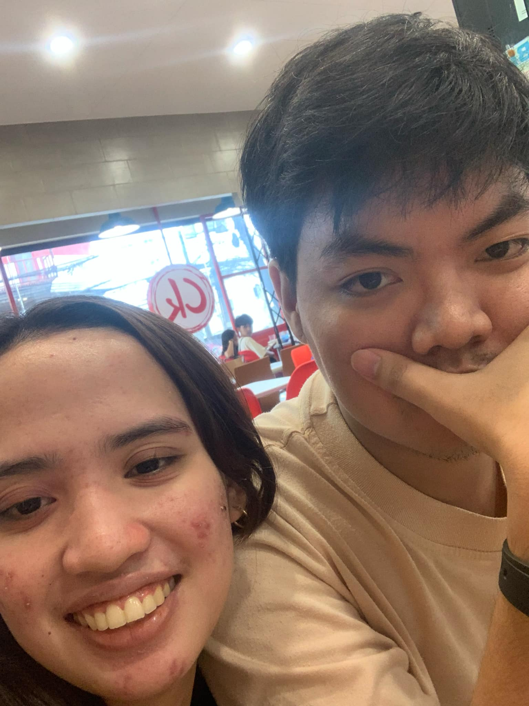
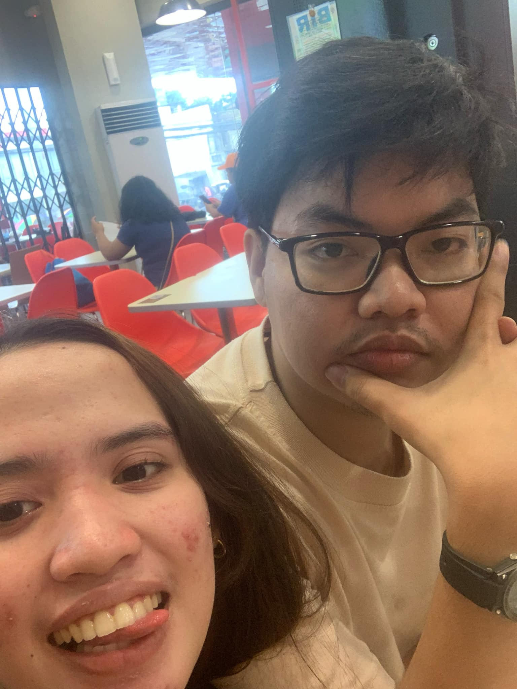
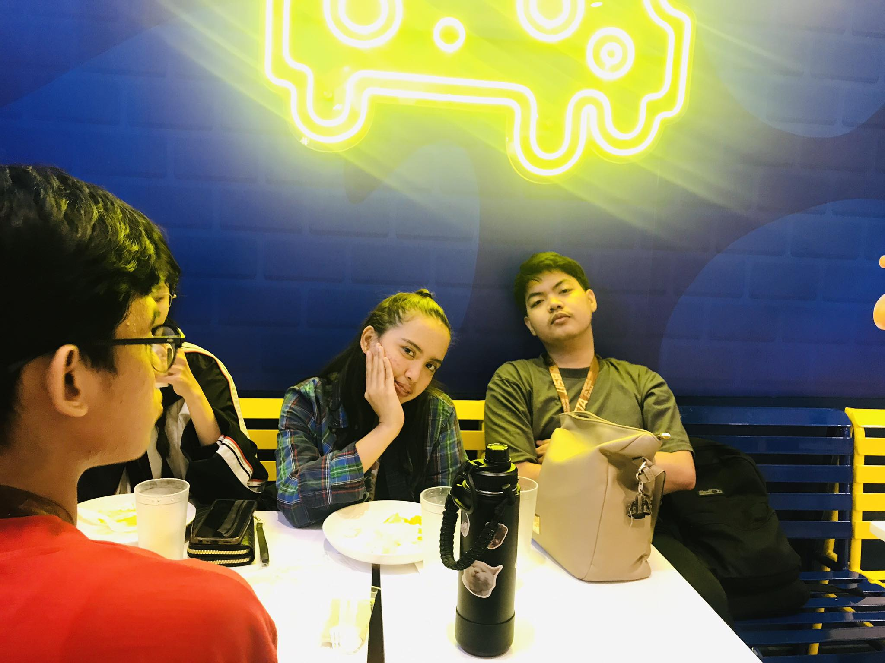
 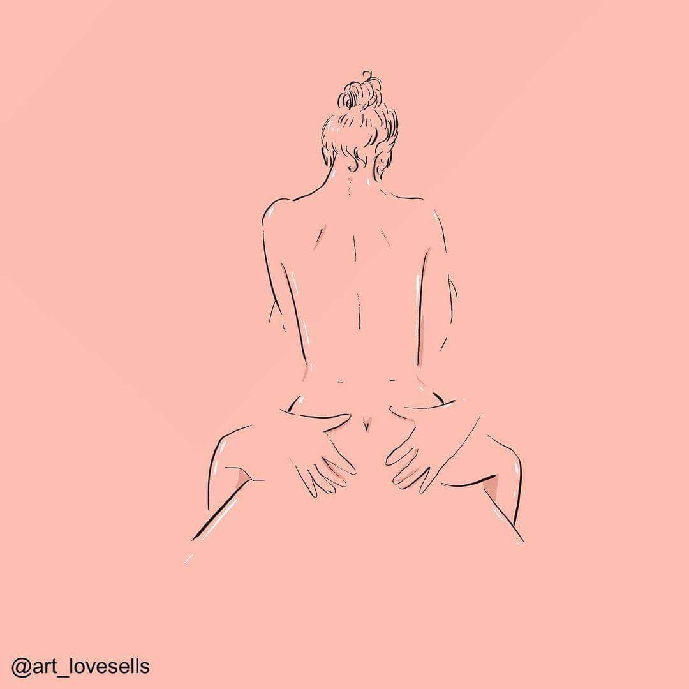
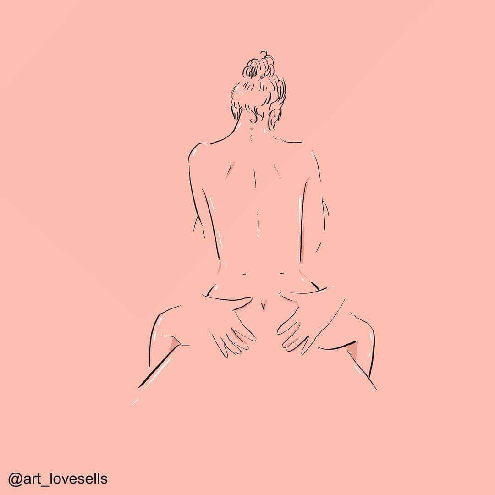